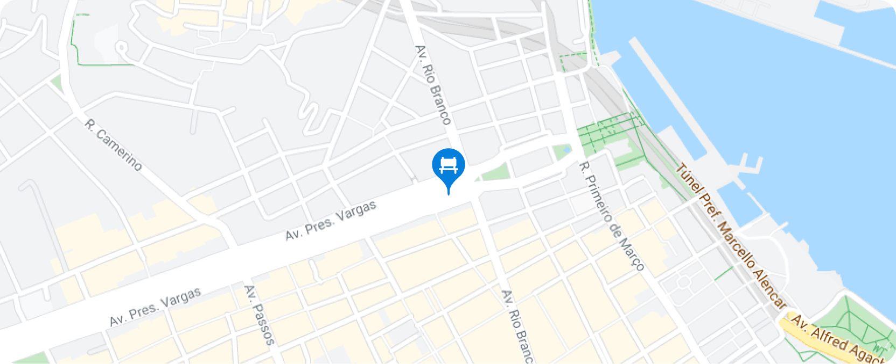

Gap do Itaú da Voluntários
Pamela Oliveira
33 visualizações
O Ministério da Saúde vai pedir à Agência Nacional de Vigilância Sanitária (Anvisa) ainda nesta semana uma autorização para o uso de autoteste de Covid-19 no Brasil. Outros países já utilizam esse teste para agilizar o diagnóstico da doença.
Atualmente, a venda do autoteste não é liberada no Brasil. O exame pode ser feito em casa com a coleta do material no nariz com cotonete ou por saliva. O autoteste, no entanto, tem sensibilidade menor do que outros exames, como o RT-PCR, e está sujeito ao erro do paciente não treinado.


Na sexta-feira (7), a Anvisa emitiu uma nota esclarecendo que as regras atuais só permitem “o registro de autoteste de doenças infectocontagiosas passíveis de notificação compulsória, como a Covid-19, caso haja uma política de saúde pública e estratégia de ação estabelecida pelo Ministério da Saúde”.